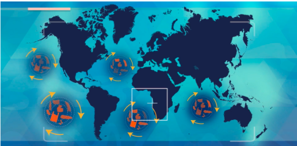

“¡Bienvenidos a Horripilandia! El sistema insostenible.
Aquí los microplásticos protagonizan nuestros océanos”
Descripción del proyecto:
Horripilandia es una sátira, con fundamento científico dirigido a la crítica y
discusión sobre el uso y consumo de plásticos desechables. El objetivo es exponer
el escenario actual de contaminación por microplásticos y su impacto económico,
con el propósito de modificar y reducir nuestros hábitos de consumo de plástico
desechable y adaptarnos a la economía circular.
¿Qué problema vas a abordar?
Abordamos una descripción de lo que representa “Horripilandia: el mundo insostenible”,
una crítica a la situación actual con los plásticos desechables, siendo lo opuesto a sostenible.
Con ello mostramos cómo se generan y afectan los microplásticos en la producción primaria oceánica
desencadenando un desbalance trófico que compromete la salud ecosistémica y humana, generando costos económicos.
¿Por qué es importante?
La crisis ambiental es responsabilidad de quienes la provocan, en este sentido,
presentar la perspectiva actual y futura, nos permite replantearnos nuestras acciones cotidianas.
Es importante porque los plásticos desechables no son una necesidad real, sino la fantasía del consumo.
¿Cómo se relaciona con la ODS asignada a tu club?
En Oceanos sustantables, los ODS son: vida submarina y ciudades y comunidades sostenibles. Nuestro proyecto"Horripilandia: el mundo
insostenible" tiene por objetivo general exponer la crisis de la vida marina, desde grandes animales pelagicos hasta diminutos
como el zooplankton. Que en los objeticvos trata directamente a la vida marina. Presentando un estudio de caso de los Halobates
con los microplásticos, una relación que denominamos "circulo vicioso". Ese acercamiento, nos da información sobre la vivencia actual
de los microplasticos en el ecosistema...que a largo plazo esta consecuencia regresa como boomerang a la causa, dicho de otra forma,
al habito de consumo del humano.Para atender la parte de ciudades y comunidades sostenibles, presentamos una serie de acciones que
son aplicables a escala local, abordando por ultimo a las comunidades sostenibles.
¿Cómo se relaciona lo aprendido en tu club para resolver el problema que planteaste?
El club Oceanos sustantables nos inspiro a nuestro proyecto "Horripilandia: el mundo insostenible", permitiendonos
abordar la crisis de la vida marina: desde los grandes animales pelagicos hasta los diminutos como el zooplankton.
Con las plataformas aprendidas presentamos un estudio de caso de los Halobates con los microplásticos, una relación que denominamos
"circulo vicioso". Ese acercamiento, nos da información sobre la vivencia actual de los microplasticos en el ecosistema. Misma que discutimos con su repercución humana que
ligamos, también, al ambito económico. Por ultimo, presentamos una serie de acciones que son aplicables a escala local,que de igual forma fue uno de los temas
de apertura en el club..
Horripilandia, surge en la segunda guerra mundial por la adaptabilidad y los usos del plástico, reemplazando al vidrio, papel, madera y acero. El optimismo en la fabricación del plástico no duró y se convirtió en sinónimo de ¡barato, falso y frágil!.
Su reciclaje está lejos de ser perfecto, haciendo que la reputación del plástico caiga, sin embargo, no se desdeña su papel en el desarrollo tecnológico. Con lo anterior, el recolecto y procesamiento del mismo no es íntegro, gran parte se convierte en virutas de escalas milimétricas, conocidos como microplásticos (Science History Institute, 2021).
Comienza el recorrido...
Haciendo un viaje en escala espacial comenzamos con las Islas de basura, compuestas de residuos plásticos que ya no son útiles, derivados de fuentes terrestres en un 80% y el 20% restante de fuentes marinas. Estos residuos plásticos son atraídos a los vórtices oceánicos, generando conglomerados flotantes, tipo islas, ubicados en los cinco principales océanos; el más grande, pasó a llamarse Continente de basura del Pacifico (Caryl-Sue, 2019).

Las islas de basura forman parte de las áreas de distribución de las especies bandera y sombrilla marinas, por ejemplo: Dermochelys coriacea y Rhincodon typus. Estas especies son cazadoras y filtradoras, respectivamente. Su dieta consiste de zooplancton o fitoplancton, es decir, los bichos o plantas que flotan en el agua, ¡Cómo los microplásticos!. Los organismos están comiendo partículas de plástico sin valor nutricional, comprometiendo sus funciones fisiológicas (UICN, 2021).
Cambiando la escala espacial a microscópica, encontramos que no sólo las grandes especies comen microplásticos, sino también el zooplancton y fitoplancton. Convirtiéndose en un ciclo vicioso que amenaza la salud de los ecosistemas.
Con la finalidad de observar si hay correlación entre la la abundancia del insecto pelágico Halobates, abundancia de microplásticos y la abundancia de zooplankton se realizó este estudio exploratorio de un dataset público Datazoo con la finalidad de encontrar correlación entre estás variables y entre las latitudes de microplásticos/Halobates y longitudes microplásticos/Halobates, siendo relevante para el sector económico. Se hizo uso de la metodología que ofrece la ciencia de datos para realizar el análisis exploratorio.

Proponemos que este fenomeno,de correlación positiva en longitud de microplasticos y longitud de halobates, corresponde a la ubicación de los tropicos. Siendo la explicación la siguiente: En los tropicos las condiciones son estables durante toda la epoca del año y los microplasticos podrían jugar un posible papel como refugio, aventajando de protección a los halobates.
En este evento de la Figura 2, sugerimos un "circulo vicioso", es dicer, si la relación positiva de los microplásticos con el halobate existe podría ser el microplastico un refugio para el halobate. Con base en la Figura 1 El refugio, le ofrece una ventaja a los halobates, los cuales se reproducen exponencialmente y demandan mayor consumo de zooplankton. El aumento de consumo en zooplankton por los halobates, posiblemente, desencadena una depresión en las poblaciones de zooplankton en este sitio de estudio. En resumen, los halobates podrían amenazarse a si mismos con la tragedia de los comunes, o sea, el zooplankton no se está reproduciendo a la misma escala que el halobate se reproduce.
El análisis exploratorio se realizó en un notebook de Jupyter y puede ser visualizado en el siguiente link Ver

Figura 1.Correlación de la ubicación de los micropásticos con los halobates Figura 1. Correlación de la ubicación de los microplásticos con la ubicación de los halobates Hay una correlación positiva entre la longitud de microplasticos y longitud de halobates, mientras, en latitud de halobates y longitud de microplasticos la correlación es negativa.
.png "fig. 2")
Figura 2. Correlación de la abundancia de los microplásticos en relación a la abundancia de halobates y la masa de zooplakton. Hay un correlación de 0.2 para la abundacia de microplástico con la masa de zooplankton. En tanto a, los microplasticos con la abundancia de halobates la correlación es de 0.0, de igual manera para la masa de zooplankton con la abundancia de halobates.
Lo aprendido gracias a este proyecto, ha sido que una fuente clave de contaminación
es el inadecuado manejo de residuos tales como basurales a cielo abierto, falta de
selección y reciclado de materiales plásticos, de tratamiento de pluviales y turismo
irresponsable. El reciclado constituye una herramienta esencial para reducir el uso de petróleo,
las emisiones de dióxido de carbono y desechos tóxicos. Además, los microplásticos, una vez liberados,
pueden permanecer miles de años en el medio ambiente y ser prácticamente imposibles de eliminar;
esto debido a que se acumulan desde los ambientes terrestres al concentrarse las partículas en el
lodo de aguas residuales, el cual se emplea de forma habitual como fertilizante, y es mediante las
escorrentías, que estas llegan a desembocar en el medioambiente acuático.
-AITEX. (30 de Abril de 2021). AITEX. Recuperado el 21 de Agosto de 2021, de AITEX: https://www.aitex.es/responsabilidad-productor/
-Beaumont, N. J. (2019). Global ecological, social and economic impacts of marine plastic. Marine pollution bulletin. ELSEVIER, 142, 189-195.
-Caryl-Sue 2019. Great Pacific Garbage Patch. National Geographic
-Comisión europea 2020. Single-use plastic.
-Fernandez-Duran, R. (2011). El Antropoceno: la expansión del capitalismo global choca con la biosfera. Virus editorial. Barcelona (España).
-IUCN 2021. The IUCN Red List of Threatened Species.
-Lavayen-Villamar, K. J. (2021). El Microplastico y la contaminación del Mar. (Tesis de grado). Guayaqui.
Oceana 2018. 5 cosas que usas todos los días y no sabías que contienen plásticos.
-Rojo-Nieto, E., & Montoto Martínez, T. (2017). Basuras marinas, plásticos y microplásticos: orígenes, impactos y consecuencias de una amenaza global.
Science History Institute 2021. History and Future of Plastics.
-VEOLIA. (Octubre de 2018). VEOLIA. Obtenido de VEOLIA: https://www.planet.veolia.com/es/economia-circular-reciclaje-plastico-oceanos-contaminacion
-XiaoZhi Lim 2021. Microplastics are everywhere - but are they harmful? News feature Nature.